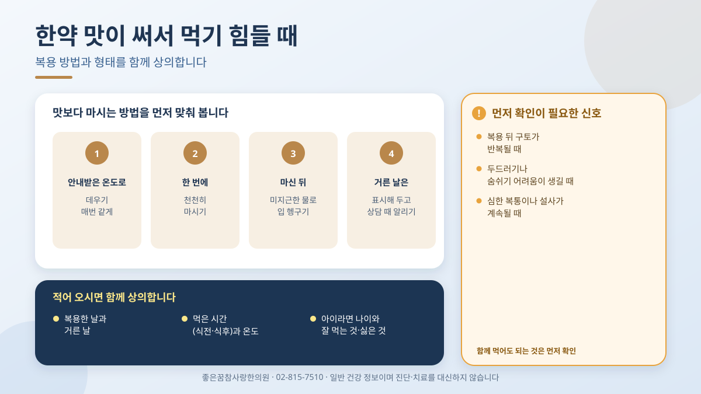

한약 맛이 써서 먹기 힘들다면 무리하게 참기보다 한의원에 먼저 말씀해 주시는 것이 좋으며, 먹는 온도와 시간, 함께 먹어도 되는 것, 다른 형태가 가능한지를 처방에 맞춰 함께 정합니다.
여쭙는 것
- 어떤 맛이 가장 힘드신가요?
- 데워서 드시나요, 차갑게 드시나요?
- 복용을 거르는 날이 얼마나 되나요?
생활에서 해 볼 것
- 안내받은 온도로 데워 한 번에 천천히 마시기
- 마시기 전에 물 한 모금으로 입을 적셔 두기
- 마신 뒤 미지근한 물로 입을 헹구기
한의원에서 함께 살필 것
- 맛 때문에 복용이 어려운 경우 복용 방법과 형태를 함께 상의합니다.
- 한약을 먹은 뒤 속이 메스꺼운 경우 복용 시간과 소화 상태를 함께 살핍니다.
- 아이가 한약을 거부하는 경우 나이와 상황에 맞는 방법을 함께 찾습니다.
먼저 확인이 필요한 신호
- 복용 뒤 구토가 반복되는 경우
- 두드러기나 호흡 곤란이 생긴 경우
- 심한 복통이나 설사가 계속되는 경우

한약 맛이 써서 먹기 힘들다면 무리하게 참기보다 한의원에 먼저 말씀해 주시는 것이 좋습니다. 먹는 온도와 시간, 함께 먹어도 되는 것, 다른 형태가 가능한지는 처방에 따라 달라 함께 정합니다. 마실 때마다 각오가 필요하다는 분, 아이가 한약을 거부한다는 부모님이 있는데, 맛 때문에 자꾸 거르게 되면 상담 때 꼭 알려 주세요.
혼자 양을 줄이거나 다른 것을 섞기 전에 먼저 여쭤 주시면 처방에 맞는 방법을 함께 찾을 수 있습니다.
왜 이런 불편이 생길 수 있나요
- 약재마다 고유의 쓴맛과 향이 있어, 처방에 따라 맛이 꽤 다르게 느껴질 수 있습니다.
- 같은 한약도 데운 정도에 따라 맛과 향이 다르게 느껴진다는 분이 많습니다.
- 맛은 코로 들어오는 향과 함께 느끼기 때문에, 냄새에 예민한 분은 같은 한약도 더 힘들어할 수 있습니다.
- 아이들은 쓴맛에 더 예민해 거부하기 쉽습니다.
- 빈속에 마시면 속이 메스꺼운 분도 있어, 먹는 시간이 맛만큼 중요할 수 있습니다.
- 바쁜 아침에 급하게 마시면 긴장한 상태에서 쓴맛을 더 크게 느낀다고 말씀하시는 분도 있습니다.

먼저 이렇게 여쭙니다
- 어떤 맛이 가장 힘드신가요?
- 데워서 드시나요, 차갑게 드시나요?
- 복용을 거르는 날이 얼마나 되나요?
- 아이가 먹는 경우 나이는 어떻게 되나요?
- 마신 뒤 속이 메스꺼운가요?
- 하루 중 언제 드시는 것이 가장 편한가요?
일상에서 먼저 해 볼 수 있는 것
- 안내받은 온도로 데워 한 번에 천천히 마시기
- 마시기 전에 물 한 모금으로 입을 적셔 두기
- 마신 뒤 미지근한 물로 입을 헹구기
- 함께 먹어도 되는 것이 있는지 한의원에 먼저 확인하기
- 아이에게는 먹는 이유를 쉽게 설명해 주기
- 거른 날은 표시해 두고 다음 상담 때 알려 주기
- 데우는 시간과 온도를 매번 같게 맞추기
- 여유가 있는 시간대로 복용 시각을 옮겨도 되는지 여쭤 보기

상황별 예시
- 예를 들어 출근 준비로 바쁜 아침에 급하게 마시다 보니 쓴맛이 더 힘들다는 직장인이라면, 하루 중 여유 있는 시간으로 복용 시각을 옮길 수 있는지 함께 봅니다. 데우는 시간을 매번 같게 맞추고 마신 뒤 물로 입을 헹구는 순서를 정해 두면 부담을 덜 느낀다는 분도 있습니다.
- 예를 들어 초등학생 아이가 한약 냄새만 맡아도 고개를 돌린다면, 억지로 먹이기보다 보호자가 먼저 한의원에 알려 주세요. 아이의 나이와 평소 잘 먹는 것, 싫어하는 것을 듣고 먹는 시간과 방법, 가능한 형태를 보호자와 함께 정합니다.
- 예를 들어 빈속에 마시면 속이 메스껍다는 수험생이라면, 맛의 문제인지 먹는 시간의 문제인지부터 나눠 봅니다. 식전·식후 복용은 처방에 따라 다르니 임의로 바꾸지 말고 먼저 여쭤 주세요.
자주 하는 오해
- 쓸수록 몸에 더 좋다고 여기는 분이 있지만, 맛의 세기는 처방에 들어간 약재에 따라 달라질 뿐 그만큼 더 잘 듣는다는 뜻은 아닙니다.
- 참고 먹어야 한다고 생각해 말하지 않는 분이 많지만, 맛 때문에 자꾸 거른다는 것을 알려 주셔야 방법을 함께 찾을 수 있습니다.
- 꿀이나 주스를 섞으면 괜찮다고 생각하기 쉽지만, 처방에 따라 다를 수 있어 먼저 확인이 필요합니다.

스스로 점검해 보세요
- 일주일에 두 번 이상 맛 때문에 거르거나 남긴다
- 마실 때마다 오래 망설이게 된다
- 마신 뒤 메스꺼움이 한참 이어진 적이 있다
- 데우는 시간과 온도가 그날그날 다르다
- 안내받은 복용 시각(식전·식후)을 기억한다
- 꿀이나 주스를 섞어도 되는지 아직 여쭤 보지 않았다
- 아이라면 한약을 왜 먹는지 아이가 알고 있다
한의원에서 함께 살필 수 있는 경우
- 맛 때문에 복용이 어려운 경우 복용 방법과 형태를 함께 상의합니다.
- 한약을 먹은 뒤 속이 메스꺼운 경우 복용 시간과 소화 상태를 함께 살핍니다.
- 아이가 한약을 거부하는 경우 나이와 상황에 맞는 방법을 함께 찾습니다.
좋은꿈참사랑한의원에서는 한약을 진찰과 상담을 거친 뒤 처방하고 원내에서 달이며, 드릴 때 먹는 방법을 함께 안내합니다. 맛 때문에 복용이 어렵다면 처방과 상태를 다시 살펴 먹는 온도와 시간, 가능한 형태를 함께 정하고, 아이라면 보호자와 함께 아이에게 맞는 방법을 찾습니다. 드시는 중에 궁금한 점은 전화로 먼저 문의해 주세요.
처음 오시면 불편한 증상과 함께 입맛과 소화, 맛이나 향에 예민한 편인지도 여쭙습니다. 맥을 짚고 필요하면 혀와 배를 살펴 한약이 필요한지부터 판단하고, 처방이 정해지면 원내에서 달이며 대표원장이 약재를 검수합니다.
받으시는 날에는 먹는 온도와 시각을 알려 드리고, 다음에 오시면 맛 때문에 거른 날은 없었는지, 마신 뒤 속은 어땠는지 지난 이야기를 이어서 여쭙습니다.

얼마나 지켜보고 언제 상담할까요
- 처음 며칠은 안내받은 온도와 시각을 지키며 마셔 보고, 거른 날과 남긴 양을 달력에 표시해 두세요.
- 일주일에 두 번 이상 맛 때문에 거르게 된다면 다음 진료를 기다리지 말고 전화로 알려 주세요. 먹는 방법이나 형태를 함께 다시 봅니다.
- 마신 뒤 메스꺼움이 이틀 넘게 반복되면 복용 시간과 소화 상태를 함께 살펴야 하니 연락해 주세요.
- 구토가 반복되거나 두드러기, 숨참이 생기면 복용을 멈추고 바로 연락하시고, 숨이 차면 가까운 응급실을 이용하세요.
이렇게 기록해 오시면 상담이 쉬워집니다
- 복용한 날과 거른 날
- 먹은 시간(식전·식후)과 온도
- 마신 뒤 속이 불편했던 날
- 아이라면 나이와 평소 잘 먹는 것·싫어하는 것

이런 증상은 먼저 확인이 필요합니다
- 복용 뒤 구토가 반복되는 경우
- 두드러기나 호흡 곤란이 생긴 경우
- 심한 복통이나 설사가 계속되는 경우
이런 경우에는 복용을 멈추고 한의원에 연락하시고, 숨이 차면 응급실로 바로 확인하셔야 합니다. 복용 중인 양약과 영양제, 임신·수유 여부, 알레르기는 진료 전에 꼭 알려 주세요. 복용 중인 양약은 처방한 의사와 상의 없이 줄이거나 끊지 않습니다.
관련 글
- 환(丸)과 탕약은 무엇이 다르고 어떻게 고르나요?
- 한약은 식전과 식후 중 언제 먹는지, 일반적으로 어떻게 안내하나요?
- 한약을 먹는 동안 커피나 차는 마셔도 되나요?
한눈에 보는 표
| 구분 | 핵심 |
|---|---|
| 여쭙는 것 | 어떤 맛이 가장 힘드신가요? 데워서 드시나요, 차갑게 드시나요? |
| 생활에서 해 볼 것 | 안내받은 온도로 데워 한 번에 천천히 마시기 마시기 전에 물 한 모금으로 입을 적셔 두기 |
| 한의원에서 함께 살필 것 | 맛 때문에 복용이 어려운 경우 복용 방법과 형태를 함께 상의합니다. 한약을 먹은 뒤 속이 메스꺼운 경우 복용 시간과 소화 상태를 함께 살핍니다. |
| 먼저 확인이 필요한 신호 | 복용 뒤 구토가 반복되는 경우 두드러기나 호흡 곤란이 생긴 경우 |
자주 묻는 질문
꿀이나 설탕을 타 먹어도 되나요?
처방에 따라 다를 수 있어 한의원에 먼저 확인해 주세요.
환이나 다른 형태로도 받을 수 있나요?
처방과 상태에 따라 가능한 형태가 다르니 상담 때 여쭤 보세요.
너무 써서 반만 먹어도 되나요?
양을 임의로 줄이기보다 먼저 연락해 주시면 처방에 맞는 방법을 함께 찾습니다.
진료 시간은 어떻게 되나요?
좋은꿈참사랑한의원은 평일 09:30~20:00(점심 13:00~14:00), 토·일·공휴일 09:30~15:00에 진료합니다.
차갑게 마시면 덜 쓴데 그렇게 먹어도 되나요?
처방에 따라 안내하는 온도가 다를 수 있어, 바꾸기 전에 한의원에 먼저 여쭤 주세요.
마신 뒤 사탕을 먹어도 되나요?
처방과 상태에 따라 다를 수 있어 상담 때 함께 확인해 드립니다.
이 글은 일반적인 건강 정보이며 개인의 진단이나 치료를 대신하지 않습니다. 증상이 있거나 복용 중인 약이 있다면 진료를 통해 확인하세요. 치료 효과는 개인마다 다를 수 있습니다.
작성 기준: 일반적으로 알려져 있는 건강 정보를 참고해 정리했습니다(대표원장 감수). 증상 기록은 1~2주 동안 하루 1회, 비슷한 시간에 적어 오시면 지난 상태와 비교하기 쉽습니다.
좋은꿈참사랑한의원은 재진 때 지난번 이야기부터 이어서 여쭙니다. 진료시간과 예약은 오시는 길에서 확인하세요.
어디서 상담받을 수 있나요?
좋은꿈참사랑한의원은 서울 동작구 만양로2길 2 신성빌딩 3층·5층(서울 동작구 상도동, 7호선 상도역 3번 출구 근처)에 있습니다. 한의사 3명(이종호 대표원장, 조영기 수석진료원장, 정원영 진료원장)이 진료합니다. 진료시간은 평일 09:30~20:00(점심 13:00~14:00), 토·일·공휴일 09:30~15:00이며, 방문 전 전화로 확인을 권합니다. 예약은 네이버 예약, 카카오톡 상담, 전화 02-815-7510로 받습니다.